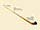
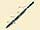
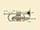
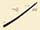
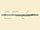
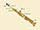
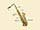
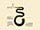
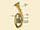

Accueil
Accueil
Accueil
Virtual encyclopedia of musical instruments around the world
Home
Families
Bands
In the world
A to Z
Website FR
Instruments in
Europe
Accordion, button
Accordion, piano
Alphorn

Bagpipe of Highland
Balalaika
Basset-Horn
Bassoon

Bassoon, double
Bouzouki
Bugle
Castanets
Celesta
Cello
Chalumeau
Chitarrone
Cimbalom
Clarinet
Clarinet, bass
Clavichord
Clavinet
Cog Rattle
Concertina
Cornet

Cornett

Crumhorn
Curtal
Diple
Double Bass
Duda
Dvojnice
English Horn
Euphonium
Fife
Flageolet
Flugelhorn
Flute

Flute, One-keyed
Flute, Piccolo
French Horn
Glockenspiel
Guitar, Classical
Guitar, Torres
Guitar, Twelve-String
Hammer Dulcimer
Hand Bell
Hand Horn
Harmonium
Harp
Harp, Celtic or Irish Harp
Harpsichord
Hurdy-Gurdy
Jew's Harp
Kantele
Launeddas
Mandolin
Northumbrian Small-Pipe
Oboe
Piano, Fortepiano
Piano, Grand
Piano, Upright
Post Horn
Recorder
Sackbut
Sampler, Digital
Saxophone, Alto
Saxophone, Baritone
Saxophone, Soprano

Saxophone, Tenor

Serpent

Spinet
Timpani
Tin Whistle
Trombone
Trombone, Valve
Trumpet
Trumpet, Piccolo
Tuba
Tuba, Wagner

Tubular Bells
Viol
Viola
Violin
Violin, Hardanger Fiddle
Whip
Xylophone
Zampogna
Zither
Legal notice